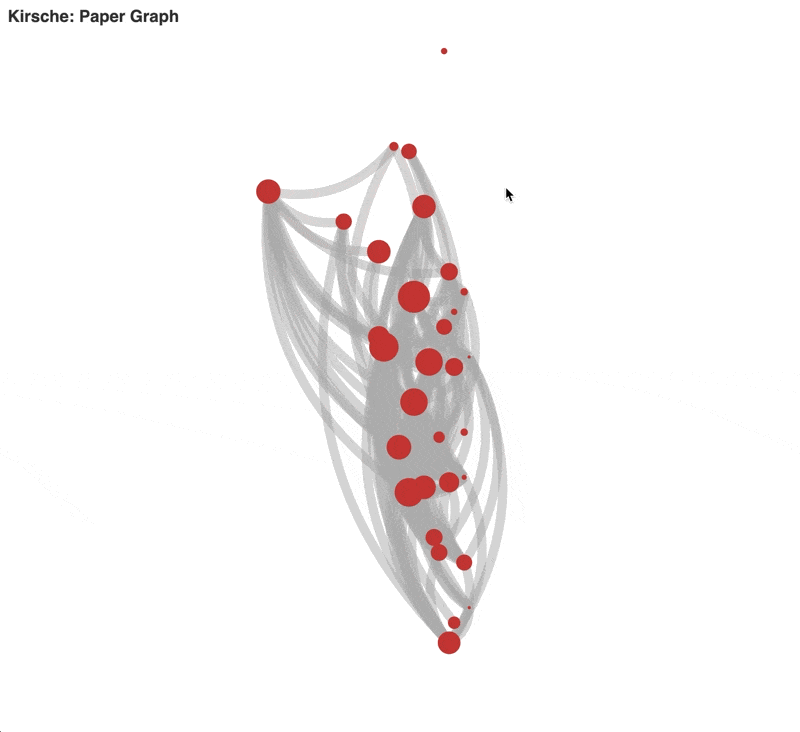

Tutorials
Tutorials¤
The easiest way to use Kirsche is through the command line tool.
Kirsche in your script
Kirsche also works as a proper Python package. See this tutorials for more.
Install¤
pip install kirsche
Install in an Environment
Unless you are using this in a temporary machine like a docker container, it is recommended to install this in an environment.
For example, using conda, we can create an environment called kirsche or any other name you prefer,
conda create -n "kirsche" python=3.8 pip
then activate the environment
conda activate kirsche
Install kirsche in this environment
pip install kirsche
Download Metadata of Papers¤
Kirsche downloads metadata about the given papers. The papers can be provided through a bib file or simply through an option to the command line.
Using DOIs¤
kirsche metadata -p "10.1016/j.sna.2020.112529" -p "10.1152/jn.00208.2014"
The above command will print out the metadata in the command line.
To save the results as a file, specify the path through the -tm option:
kirsche metadata -p "10.1016/j.sna.2020.112529" -p "10.1152/jn.00208.2014" -t paper_metadata.json
The above command saves the metadata of the papers in paper_metadata.json. Please choose a path that is suitable for you.
An Example of the Output File
The file paper_metadata.json will look like the following.
[
{
"abstract": "Despite compelling phenomenological evidence that small electric fields (<5 mV/mm) can affect brain function, a quantitative and experimentally verified theory is currently lacking. Here we demonstrate a novel mechanism by which the nonlinear properties of single neurons \u201camplify\u201d the effect of small electric fields: when concurrent to suprathreshold synaptic input, small electric fields can have significant effects on spike timing. For low-frequency fields, our theory predicts a linear dependency of spike timing changes on field strength. For high-frequency fields (relative to the synaptic input), the theory predicts coherent firing, with mean firing phase and coherence each increasing monotonically with field strength. Importantly, in both cases, the effects of fields on spike timing are amplified with decreasing synaptic input slope and increased cell susceptibility (millivolt membrane polarization per field amplitude). We confirmed these predictions experimentally using CA1 hippocampal neurons in vitro exposed to static (direct current) and oscillating (alternating current) uniform electric fields. In addition, we develop a robust method to quantify cell susceptibility using spike timing. Our results provide a precise mechanism for a functional role of endogenous field oscillations (e.g., gamma) in brain function and introduce a framework for considering the effects of environmental fields and design of low-intensity therapeutic neurostimulation technologies.",
"arxivId": null,
"authors": [
{
"authorId": "2433485",
"name": "T. Radman",
"url": "https://www.semanticscholar.org/author/2433485"
},
{
"authorId": "2171101564",
"name": "Yuzhuo Su",
"url": "https://www.semanticscholar.org/author/2171101564"
},
{
"authorId": "49211962",
"name": "Je Hi An",
"url": "https://www.semanticscholar.org/author/49211962"
},
{
"authorId": "2583773",
"name": "L. Parra",
"url": "https://www.semanticscholar.org/author/2583773"
},
{
"authorId": "2589386",
"name": "M. Bikson",
"url": "https://www.semanticscholar.org/author/2589386"
}
],
"citationVelocity": 12,
"citations": [
{
"arxivId": null,
"authors": [
{
"authorId": "1753686931",
"name": "Adri\u00e0 Galan-Gadea"
},
{
"authorId": "144302802",
"name": "R. Salvador"
},
{
"authorId": "2125273592",
"name": "F. Bartolomei"
},
{
"authorId": "7992816",
"name": "F. Wendling"
},
{
"authorId": "144679534",
"name": "G. Ruffini"
}
],
"doi": "10.1101/2022.07.19.500653",
"intent": [
"background"
],
"isInfluential": false,
"paperId": "aa4c53bd984e73fadf57f61c8d130a7754d662e3",
"title": "Spherical harmonics representation of the steady-state membrane potential shift induced by tDCS in realistic neuron models",
"url": "https://www.semanticscholar.org/paper/aa4c53bd984e73fadf57f61c8d130a7754d662e3",
"venue": "bioRxiv",
"year": 2022
},
// ... There are many more but we only list one here as an example
],
"corpusId": 1314383,
"doi": "10.1523/JNEUROSCI.0095-07.2007",
"fieldsOfStudy": [
"Physics",
"Medicine"
],
"influentialCitationCount": 18,
"isOpenAccess": true,
"isPublisherLicensed": true,
"is_open_access": true,
"is_publisher_licensed": true,
"numCitedBy": 225,
"numCiting": 62,
"paperId": "b7c917cc3e489a3af40270dcba6dbf3bd2ebadf7",
"references": [
{
"arxivId": null,
"authors": [
{
"authorId": "48950990",
"name": "B. Nolan"
}
],
"doi": "10.1016/S0513-5117(08)79025-2",
"intent": [
"background"
],
"isInfluential": true,
"paperId": "23a29ca37d7f5e0cd771ea5441ff625a4db9d399",
"title": "Boosting slow oscillations during sleep potentiates memory",
"url": "https://www.semanticscholar.org/paper/23a29ca37d7f5e0cd771ea5441ff625a4db9d399",
"venue": "",
"year": 2008
},
// ... omitted some of the references
],
"s2FieldsOfStudy": [
{
"category": "Physics",
"source": "external"
},
{
"category": "Medicine",
"source": "external"
},
{
"category": "Biology",
"source": "s2-fos-model"
}
],
"title": "Spike Timing Amplifies the Effect of Electric Fields on Neurons: Implications for Endogenous Field Effects",
"topics": [
{
"topic": "electric field",
"topicId": "5788",
"url": "https://www.semanticscholar.org/topic/5788"
},
{
"topic": "Hippocampus (Brain)",
"topicId": "1384",
"url": "https://www.semanticscholar.org/topic/1384"
},
{
"topic": "In Vitro [Publication Type]",
"topicId": "148897",
"url": "https://www.semanticscholar.org/topic/148897"
},
{
"topic": "neurostimulation",
"topicId": "84054",
"url": "https://www.semanticscholar.org/topic/84054"
},
{
"topic": "millivolt",
"topicId": "324943",
"url": "https://www.semanticscholar.org/topic/324943"
},
{
"topic": "CA1 field",
"topicId": "1381",
"url": "https://www.semanticscholar.org/topic/1381"
},
{
"topic": "emotional dependency",
"topicId": "2851",
"url": "https://www.semanticscholar.org/topic/2851"
},
{
"topic": "Tissue membrane",
"topicId": "1269",
"url": "https://www.semanticscholar.org/topic/1269"
}
],
"url": "https://www.semanticscholar.org/paper/b7c917cc3e489a3af40270dcba6dbf3bd2ebadf7",
"venue": "Journal of Neuroscience",
"year": 2007
}
]
Using a bib file¤
kirsche metadata -bib path/to/your/bib/file.bib -t save/to/file/path.json
Download and Calculate Connections¤
Kirsche can also calculate the connections between papers.
Using the Metadata Download in the Previous Step¤
kirsche connections -meta paper_metadata.json -t paper_connections.json
Example of Saved Result
This command will create a json file (e.g., paper_connections.json) that contains some metadata and an extra field local__referenced_to which links to other records in the same file.
{
"authors": [
{
"authorId": "2605353",
"name": "D. Reato",
"url": "https://www.semanticscholar.org/author/2605353"
},
{
"authorId": "2589386",
"name": "M. Bikson",
"url": "https://www.semanticscholar.org/author/2589386"
},
{
"authorId": "2583773",
"name": "L. Parra",
"url": "https://www.semanticscholar.org/author/2583773"
}
],
"corpusId": 2453569,
"doi": "10.1152/jn.00208.2014",
"numCitedBy": 47,
"numCiting": 90,
"title": "Lasting modulation of in vitro oscillatory activity with weak direct current stimulation.",
"venue": "Journal of Neurophysiology",
"year": 2015,
"local__referenced_to": [
"10.1113/jphysiol.2003.055772",
"10.1152/jn.00715.2011",
"10.1152/jn.00319.2011",
"10.1113/jphysiol.2012.247171",
"10.1016/j.brs.2009.03.007",
"10.1523/jneurosci.2059-10.2010",
"10.1016/j.neuron.2010.03.035",
"10.1523/jneurosci.0095-07.2007"
]
},
{
"authors": [
{
"authorId": "9438545",
"name": "F. Farahani",
"url": "https://www.semanticscholar.org/author/9438545"
},
{
"authorId": "39934585",
"name": "G. Kronberg",
"url": "https://www.semanticscholar.org/author/39934585"
},
{
"authorId": "7657897",
"name": "Mohamad FallahRad",
"url": "https://www.semanticscholar.org/author/7657897"
},
{
"authorId": "6158426",
"name": "Hysell V. Oviedo",
"url": "https://www.semanticscholar.org/author/6158426"
},
{
"authorId": "2583773",
"name": "L. Parra",
"url": "https://www.semanticscholar.org/author/2583773"
}
],
"corpusId": 232291349,
"doi": "10.1016/j.brs.2021.03.001",
"numCitedBy": 11,
"numCiting": 59,
"title": "Effects of direct current stimulation on synaptic plasticity in a single neuron",
"venue": "Brain Stimulation",
"year": 2021,
"local__referenced_to": [
"10.1152/jn.00208.2014",
"10.1113/jphysiol.2003.055772",
"10.1152/jn.00208.2014",
"10.1016/j.brs.2009.03.007",
"10.1523/jneurosci.2059-10.2010",
"10.1016/j.neuron.2010.03.035",
"10.1002/ana.24708",
"10.1113/jp273005",
"10.1016/j.brs.2016.10.001",
"10.1016/j.brs.2019.10.014"
]
},
// ... omitted all other records here
]
Using Some DOIs¤
This command also works with DOI as inputs.
kirsche connections -p "10.1016/j.sna.2020.112529" -p "10.1152/jn.00208.2014" -t paper_connections.json
Using a bib file¤
Similarly, we can use a bib file as input.
kirsche connections -bib my_bib_input.bib -t paper_connections.json
Visualizations¤
The connection file can already be loaded into some code or tools to be further processed. However, if we would like to have a quick look at the connections, kirsche also provides a simple visualization tool.
If we already have the metadata (e.g.,paper_metadata.json) or connection (e.g., paper_connections.json), we can use those to produce an interactive visualization,
kirsche visualization -meta paper_metadata.json -t paper_connection_visualization.html
kirsche visualization -conn paper_connections.json -t paper_connection_visualization.html
The End2End Pipeline: Visualizations from a List of Papers¤
Suppose we have a bib file called test.bib, and we would like to generate an html file called test.html,
kirsche visualization -bib "test.bib" -t "test.html"
Open the test.html file in your browser.
